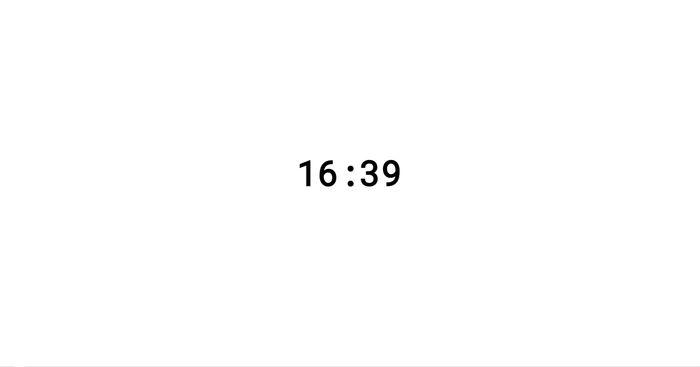
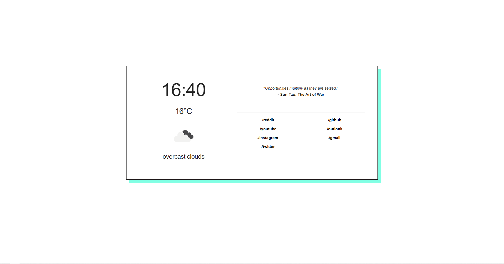

Hi,
if you have landed on this page you probably want to se one of my startpages, se bellow
for the version two i have to add an api key to lacal starage using the command => localStorage.setItem("api", "YOUR_OPEN_WEATHER_MAP_API_KEY");
Version nr.1

Version nr.2
